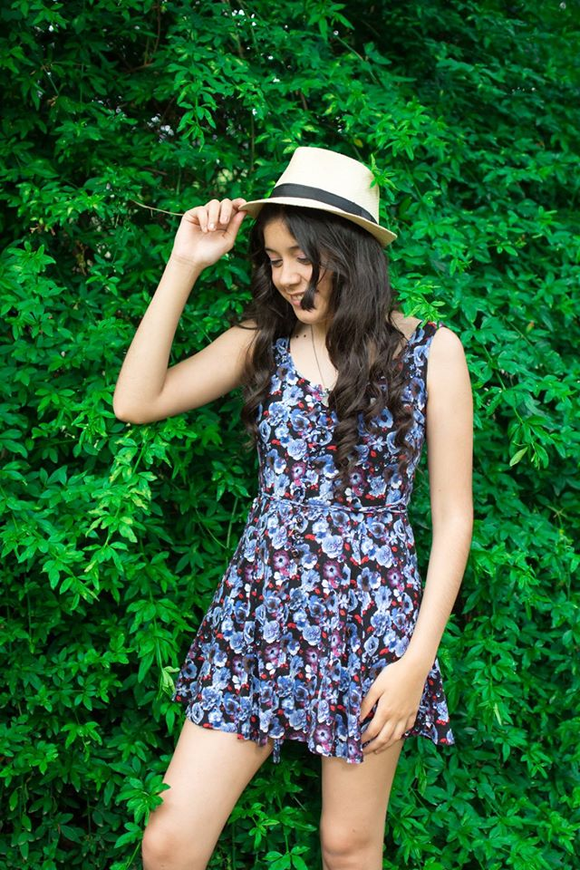

10. December '16
Nadia - Book 15 años
Hermosa Nadia haciendo su book de 15 años! Ultimas sesiones del año!

Fotografia de Eventos, mi pasion y vida
Que naval ni que naval, yo soy una fotografa de primerisimo nivel, mas barato y mucho pero mucho mejor, sino, mira lo que esta esta pagina papa, naval tiene algo parecido? na, porque es un gil, contratame ami, no seas gil vos tambien.
Porque si contratas a otro, anda sabiendo, que al entrar aca te instalo un virus, donde te saco informacion sobre tu ubicacion, luego contrato a sicarios y ban, fuiste.
Hermosa Nadia haciendo su book de 15 años! Ultimas sesiones del año!
Air Wedding - Standesamtliche Trauung über den Wolken
Air Wedding - Standesamtliche Trauung über den Wolken
Hermosa Nadia haciendo su book de 15 años! Ultimas sesiones del año!
Air Wedding - Standesamtliche Trauung über den Wolken
Air Wedding - Standesamtliche Trauung über den Wolken
Simplemente: Apazionada por la fotografia (y francia)

Me encanta mi trabajo como fotógrafo y para preparar otros con mis fotos una alegría. Lo más importante en mi vida es mi marido, nuestro perrito Bolek, mi familia y mis amigos. Mi pasión además de la fotografía está de viaje y el buceo. Una enorme debilidad que tengo por las cosas bellas y deliciosa comida. Mi lema - "Disfruta el momento"
Sientete completa, llena de felicidad y gozo, al contrarme: